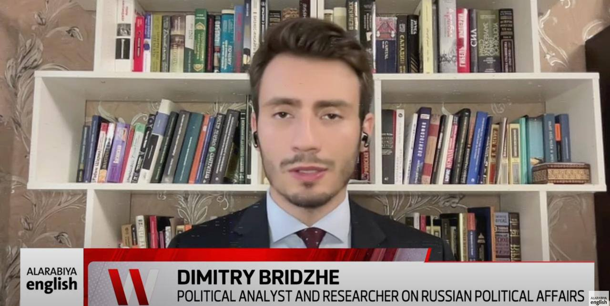
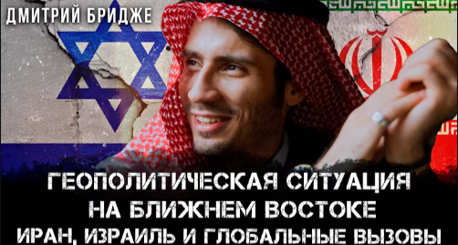

Media Appearances & Portfolio
Explore my latest media appearances, analytical articles, podcast interviews, and expert commentary on international affairs and economic trends.
150+
Media Appearances
85+
Analytical Articles
45+
Podcast Episodes
30+
Panel Discussions
Featured Content

TV Interview
Exclusive Interview: Middle East Economic Outlook 2025
In-depth analysis of economic trends, investment opportunities, and geopolitical challenges facing the Middle East region in the coming year.

Podcast
The Future of Gulf Economies

Article